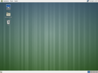

These SlackBuilds are intended to provide an easy way for a user to build the MATE Desktop Environment on Slackware. The scripts will be hosted in a Git repo shortly. In the meantime, here are some obligatory screenshots of MATE 1.5 (the development branch of what will soon be MATE 1.6) running on Slackware64-14.0:
